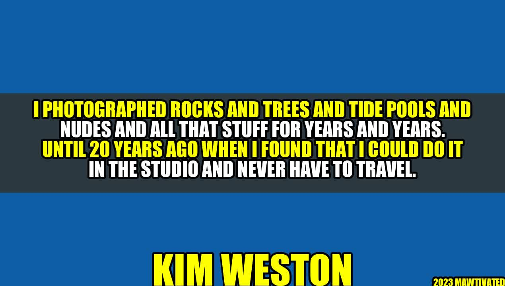

Kim Weston and the Art of Studio Photography
Kim Weston is a renowned photographer who has spent his career capturing the beauty of nature and the human form. His work spans decades and ranges from landscapes and seascapes to nudes and portraits.
As a young photographer, Weston spent years traveling the world to capture the perfect shot. He photographed rocks and trees and tide pools and nudes and all that stuff for years and years. However, as he grew older, he started to realize the advantages of studio photography.
"Until 20 years ago when I found that I could do it in the studio and never have to travel."
Weston discovered that he could achieve the same level of artistry and creativity in the controlled environment of a studio as he could in the great outdoors. With the right lighting, props, and backdrops, he could create stunning images that rivaled anything he had previously captured in nature.
Kim Weston's Story
Kim Weston was born in California in 1953. He came from a family of artists, including his famous grandfather, Edward Weston, who was a pioneering photographer of the 20th century. Kim Weston followed in his grandfather's footsteps and began taking photographs at an early age.
He started out photographing landscapes and seascapes around his hometown of Carmel before branching out into nudes and portraits. He was deeply influenced by the work of his grandfather and other great photographers of the time, including Ansel Adams and Minor White.
Weston's photographic style is characterized by a sense of intimacy and beauty that is often lacking in modern photography. His nudes are particularly renowned for their sensuality and grace, capturing the human form in all its glory.
Advantages of Studio Photography
Studio photography offers a number of advantages over outdoor photography. Here are some of the main benefits:
- Controlled environment - In a studio, you have complete control over the lighting, temperature, and background. This allows you to create a consistent look and feel for your photographs.
- No distractions - When you're out in the field, there are countless distractions that can interfere with your photography. In a studio, you can focus solely on your subject without any interruptions.
- Greater creativity - With the ability to control every aspect of the shoot, you have greater creative freedom to experiment with different poses, lighting setups, and props. This can lead to truly stunning and unique photographs.
- Less gear to carry - When you're working in a studio, you don't need to carry around all the heavy and expensive equipment that you would need for an outdoor shoot. This can save you time, money, and backache.
Examples of Kim Weston's Studio Photography
Here are some examples of Kim Weston's stunning studio photography:


Conclusion
In conclusion, Kim Weston has taught us that studio photography can be just as beautiful and creative as outdoor photography. By taking control of the environment and the lighting, we can create stunning works of art that capture the essence of our subjects. Here are three key takeaways:
- Control the environment - In a studio, you have complete control over the lighting, temperature, and background. This allows you to create a consistent look and feel for your photographs.
- Experiment with creativity - With the ability to control every aspect of the shoot, you have greater creative freedom to experiment with different poses, lighting setups, and props. This can lead to truly stunning and unique photographs.
- Less is more - When you're working in a studio, you don't need all the heavy and expensive equipment that you would need for an outdoor shoot. Keep it simple and focus on what's important - your subject and your vision.
Curated by Team Akash.Mittal.Blog
Share on Twitter Share on LinkedIn